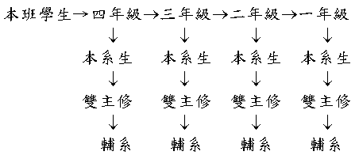

國立中正大學 選課系統篩選原則
一、各學系之專業必修科目（一科目僅開單班者）由教學組直接載入每位學生選課系統，若有餘額再開放給外系選修。
※二、專業選修科目由學生自行完成選課作業，依限修條件及篩選原則處理。
（欲選修本系專業選修科目者，需於系統篩選前完成選課作業，否則即喪失優先條件）
三、篩選原則：（第四十四教務會議決議）
1.「限制人數科目」篩選原則優先順序如下：
A.共同必修科目：
本班學生→四年級→三年級→二年級→一年級
B.通識教育科目：(第九十一次教務會議修正)
以大四欠缺該領域學生優先，其餘隨機亂數篩選
C.專業必修：

D.專業選修：
E.教育學程：
學士班大四、碩（博）士班三年級→碩士班二年級→學士班二、三年級、碩士班一年級、博士班一、二年級